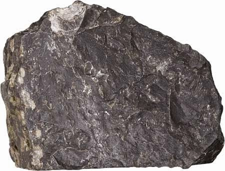
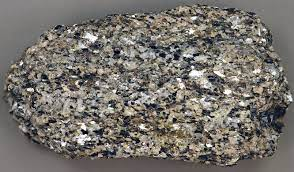

Contact Metamorphism or thermal metamorphism,occurs adjacent to
igneous intrusions and results from high temperatures associated with the igneous
intrusion. Since only a small area surrounding the intrusion is heated by the magma,
metamorphism is restricted to a zone surrounding the intrusion, called a metamorphic
aureole. Outside of the contact aureole, the rocks are unmetamorphosed.
The grade of metamorphism increases in all directions toward the intrusion. Because temperature differences between the surrounding rock and the intruded magma are larger at shallow
levels in the crust, contact metamorphism is usually referred to as high temperature, low
pressure metamorphism.
The rock produced is often a fine-grained rock that shows no
foliation, called a hornfels.
Regional & Dynamic Metamorphism
September 30,2021 by Solange Mohammed

Regional Metamorphism - This type of metamorphism occurs over large areas that were subjected to high degrees of deformation under differential stress.
Thus, it usually results in forming metamorphic rocks that are strongly foliated, such as slates, schists, and gneisses.
The differential stress usually results from tectonic forces that produce a compression of the rocks,
such as when two continental masses collide with one another.
Thus, regionally metamorphosed rocks occur in the cores of mountain ranges or in eroded mountain ranges.
Compressive stresses result in folding of the rock, as shown here, and results in thickening of the crust which tends to
push rocks down to deeper levels where they are subjected to higher temperatures and pressures.
Dynamic Metamorphism - This type of metamorphism is due to mechanical
deformation, like when two bodies of rock slide past one another along a fault zone.
Heat is generated by the friction of sliding along the zone, and the rocks tend to crushed
and pulverized due to the sliding. Dynamic metamorphism is not very common and is
restricted to a narrow zone along which the sliding occurred. The rock that is produced
is called a mylonite.